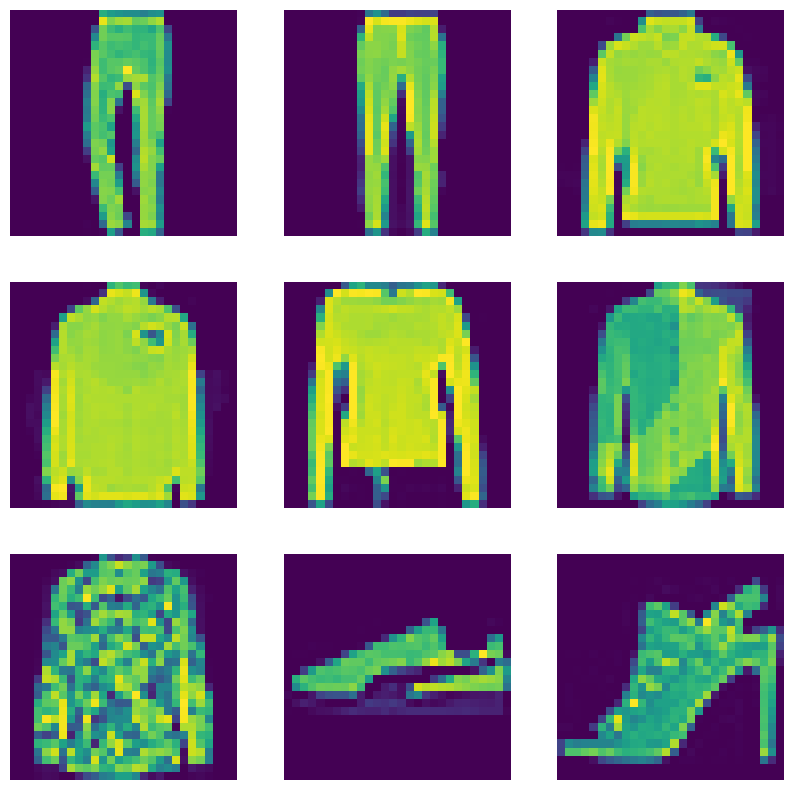

MixUp augmentation for image classification
Author: Sayak Paul
Date created: 2021/03/06
Last modified: 2023/07/24
Description: Data augmentation using the mixup technique for image classification.

Introduction
mixup is a domain-agnostic data augmentation technique proposed in mixup: Beyond Empirical Risk Minimization by Zhang et al. It's implemented with the following formulas:

(Note that the lambda values are values with the [0, 1] range and are sampled from the Beta distribution.)
The technique is quite systematically named. We are literally mixing up the features and their corresponding labels. Implementation-wise it's simple. Neural networks are prone to memorizing corrupt labels. mixup relaxes this by combining different features with one another (same happens for the labels too) so that a network does not get overconfident about the relationship between the features and their labels.
mixup is specifically useful when we are not sure about selecting a set of augmentation transforms for a given dataset, medical imaging datasets, for example. mixup can be extended to a variety of data modalities such as computer vision, naturallanguage processing, speech, and so on.
Setup
import os
os.environ["KERAS_BACKEND"] = "tensorflow"
import numpy as np
import keras
import matplotlib.pyplot as plt
from keras import layers
# TF imports related to tf.data preprocessing
from tensorflow import data as tf_data
from tensorflow import image as tf_image
from tensorflow.random import gamma as tf_random_gamma
Prepare the dataset
In this example, we will be using the FashionMNIST dataset. But this same recipe can be used for other classification datasets as well.
(x_train, y_train), (x_test, y_test) = keras.datasets.fashion_mnist.load_data()
x_train = x_train.astype("float32") / 255.0
x_train = np.reshape(x_train, (-1, 28, 28, 1))
y_train = keras.ops.one_hot(y_train, 10)
x_test = x_test.astype("float32") / 255.0
x_test = np.reshape(x_test, (-1, 28, 28, 1))
y_test = keras.ops.one_hot(y_test, 10)
Define hyperparameters
AUTO = tf_data.AUTOTUNE
BATCH_SIZE = 64
EPOCHS = 10
Convert the data into TensorFlow Dataset objects
# Put aside a few samples to create our validation set
val_samples = 2000
x_val, y_val = x_train[:val_samples], y_train[:val_samples]
new_x_train, new_y_train = x_train[val_samples:], y_train[val_samples:]
train_ds_one = (
tf_data.Dataset.from_tensor_slices((new_x_train, new_y_train))
.shuffle(BATCH_SIZE * 100)
.batch(BATCH_SIZE)
)
train_ds_two = (
tf_data.Dataset.from_tensor_slices((new_x_train, new_y_train))
.shuffle(BATCH_SIZE * 100)
.batch(BATCH_SIZE)
)
# Because we will be mixing up the images and their corresponding labels, we will be
# combining two shuffled datasets from the same training data.
train_ds = tf_data.Dataset.zip((train_ds_one, train_ds_two))
val_ds = tf_data.Dataset.from_tensor_slices((x_val, y_val)).batch(BATCH_SIZE)
test_ds = tf_data.Dataset.from_tensor_slices((x_test, y_test)).batch(BATCH_SIZE)
Define the mixup technique function
To perform the mixup routine, we create new virtual datasets using the training data from
the same dataset, and apply a lambda value within the [0, 1] range sampled from a Beta distribution
— such that, for example, new_x = lambda * x1 + (1 - lambda) * x2 (where
x1 and x2 are images) and the same equation is applied to the labels as well.
def sample_beta_distribution(size, concentration_0=0.2, concentration_1=0.2):
gamma_1_sample = tf_random_gamma(shape=[size], alpha=concentration_1)
gamma_2_sample = tf_random_gamma(shape=[size], alpha=concentration_0)
return gamma_1_sample / (gamma_1_sample + gamma_2_sample)
def mix_up(ds_one, ds_two, alpha=0.2):
# Unpack two datasets
images_one, labels_one = ds_one
images_two, labels_two = ds_two
batch_size = keras.ops.shape(images_one)[0]
# Sample lambda and reshape it to do the mixup
l = sample_beta_distribution(batch_size, alpha, alpha)
x_l = keras.ops.reshape(l, (batch_size, 1, 1, 1))
y_l = keras.ops.reshape(l, (batch_size, 1))
# Perform mixup on both images and labels by combining a pair of images/labels
# (one from each dataset) into one image/label
images = images_one * x_l + images_two * (1 - x_l)
labels = labels_one * y_l + labels_two * (1 - y_l)
return (images, labels)
Note that here , we are combining two images to create a single one. Theoretically, we can combine as many we want but that comes at an increased computation cost. In certain cases, it may not help improve the performance as well.
Visualize the new augmented dataset
# First create the new dataset using our `mix_up` utility
train_ds_mu = train_ds.map(
lambda ds_one, ds_two: mix_up(ds_one, ds_two, alpha=0.2),
num_parallel_calls=AUTO,
)
# Let's preview 9 samples from the dataset
sample_images, sample_labels = next(iter(train_ds_mu))
plt.figure(figsize=(10, 10))
for i, (image, label) in enumerate(zip(sample_images[:9], sample_labels[:9])):
ax = plt.subplot(3, 3, i + 1)
plt.imshow(image.numpy().squeeze())
print(label.numpy().tolist())
plt.axis("off")
[0.0, 0.9964277148246765, 0.0, 0.0, 0.003572270041331649, 0.0, 0.0, 0.0, 0.0, 0.0]
[0.0, 1.0, 0.0, 0.0, 0.0, 0.0, 0.0, 0.0, 0.0, 0.0]
[0.0, 0.0, 0.0, 0.0, 0.9794676899909973, 0.02053229510784149, 0.0, 0.0, 0.0, 0.0]
[0.0, 0.0, 0.0, 0.0, 0.9536369442939758, 0.0, 0.0, 0.0, 0.04636305570602417, 0.0]
[0.0, 0.0, 1.0, 0.0, 0.0, 0.0, 0.0, 0.0, 0.0, 0.0]
[0.0, 0.0, 0.0, 0.0, 0.0, 0.0, 0.7631776928901672, 0.0, 0.0, 0.23682232201099396]
[0.0, 0.0, 0.045958757400512695, 0.0, 0.0, 0.0, 0.9540412425994873, 0.0, 0.0, 0.0]
[0.0, 0.0, 0.0, 0.0, 2.8015051611873787e-08, 0.0, 0.0, 1.0, 0.0, 0.0]
[0.0, 0.0, 0.0, 0.0003173351287841797, 0.0, 0.9996826648712158, 0.0, 0.0, 0.0, 0.0]

Model building
def get_training_model():
model = keras.Sequential(
[
layers.Input(shape=(28, 28, 1)),
layers.Conv2D(16, (5, 5), activation="relu"),
layers.MaxPooling2D(pool_size=(2, 2)),
layers.Conv2D(32, (5, 5), activation="relu"),
layers.MaxPooling2D(pool_size=(2, 2)),
layers.Dropout(0.2),
layers.GlobalAveragePooling2D(),
layers.Dense(128, activation="relu"),
layers.Dense(10, activation="softmax"),
]
)
return model
For the sake of reproducibility, we serialize the initial random weights of our shallow network.
initial_model = get_training_model()
initial_model.save_weights("initial_weights.weights.h5")
1. Train the model with the mixed up dataset
model = get_training_model()
model.load_weights("initial_weights.weights.h5")
model.compile(loss="categorical_crossentropy", optimizer="adam", metrics=["accuracy"])
model.fit(train_ds_mu, validation_data=val_ds, epochs=EPOCHS)
_, test_acc = model.evaluate(test_ds)
print("Test accuracy: {:.2f}%".format(test_acc * 100))
Epoch 1/10
62/907 ━[37m━━━━━━━━━━━━━━━━━━━ 2s 3ms/step - accuracy: 0.2518 - loss: 2.2072
WARNING: All log messages before absl::InitializeLog() is called are written to STDERR
I0000 00:00:1699655923.381468 16749 device_compiler.h:187] Compiled cluster using XLA! This line is logged at most once for the lifetime of the process.
907/907 ━━━━━━━━━━━━━━━━━━━━ 13s 9ms/step - accuracy: 0.5335 - loss: 1.4414 - val_accuracy: 0.7635 - val_loss: 0.6678
Epoch 2/10
907/907 ━━━━━━━━━━━━━━━━━━━━ 12s 4ms/step - accuracy: 0.7168 - loss: 0.9688 - val_accuracy: 0.7925 - val_loss: 0.5849
Epoch 3/10
907/907 ━━━━━━━━━━━━━━━━━━━━ 5s 4ms/step - accuracy: 0.7525 - loss: 0.8940 - val_accuracy: 0.8290 - val_loss: 0.5138
Epoch 4/10
907/907 ━━━━━━━━━━━━━━━━━━━━ 4s 3ms/step - accuracy: 0.7742 - loss: 0.8431 - val_accuracy: 0.8360 - val_loss: 0.4726
Epoch 5/10
907/907 ━━━━━━━━━━━━━━━━━━━━ 3s 3ms/step - accuracy: 0.7876 - loss: 0.8095 - val_accuracy: 0.8550 - val_loss: 0.4450
Epoch 6/10
907/907 ━━━━━━━━━━━━━━━━━━━━ 3s 3ms/step - accuracy: 0.8029 - loss: 0.7794 - val_accuracy: 0.8560 - val_loss: 0.4178
Epoch 7/10
907/907 ━━━━━━━━━━━━━━━━━━━━ 2s 3ms/step - accuracy: 0.8039 - loss: 0.7632 - val_accuracy: 0.8600 - val_loss: 0.4056
Epoch 8/10
907/907 ━━━━━━━━━━━━━━━━━━━━ 3s 3ms/step - accuracy: 0.8115 - loss: 0.7465 - val_accuracy: 0.8510 - val_loss: 0.4114
Epoch 9/10
907/907 ━━━━━━━━━━━━━━━━━━━━ 3s 3ms/step - accuracy: 0.8115 - loss: 0.7364 - val_accuracy: 0.8645 - val_loss: 0.3983
Epoch 10/10
907/907 ━━━━━━━━━━━━━━━━━━━━ 3s 3ms/step - accuracy: 0.8182 - loss: 0.7237 - val_accuracy: 0.8630 - val_loss: 0.3735
157/157 ━━━━━━━━━━━━━━━━━━━━ 0s 2ms/step - accuracy: 0.8610 - loss: 0.4030
Test accuracy: 85.82%
2. Train the model without the mixed up dataset
model = get_training_model()
model.load_weights("initial_weights.weights.h5")
model.compile(loss="categorical_crossentropy", optimizer="adam", metrics=["accuracy"])
# Notice that we are NOT using the mixed up dataset here
model.fit(train_ds_one, validation_data=val_ds, epochs=EPOCHS)
_, test_acc = model.evaluate(test_ds)
print("Test accuracy: {:.2f}%".format(test_acc * 100))
Epoch 1/10
907/907 ━━━━━━━━━━━━━━━━━━━━ 8s 6ms/step - accuracy: 0.5690 - loss: 1.1928 - val_accuracy: 0.7585 - val_loss: 0.6519
Epoch 2/10
907/907 ━━━━━━━━━━━━━━━━━━━━ 5s 2ms/step - accuracy: 0.7525 - loss: 0.6484 - val_accuracy: 0.7860 - val_loss: 0.5799
Epoch 3/10
907/907 ━━━━━━━━━━━━━━━━━━━━ 2s 2ms/step - accuracy: 0.7895 - loss: 0.5661 - val_accuracy: 0.8205 - val_loss: 0.5122
Epoch 4/10
907/907 ━━━━━━━━━━━━━━━━━━━━ 3s 2ms/step - accuracy: 0.8148 - loss: 0.5126 - val_accuracy: 0.8415 - val_loss: 0.4375
Epoch 5/10
907/907 ━━━━━━━━━━━━━━━━━━━━ 3s 2ms/step - accuracy: 0.8306 - loss: 0.4636 - val_accuracy: 0.8610 - val_loss: 0.3913
Epoch 6/10
907/907 ━━━━━━━━━━━━━━━━━━━━ 2s 2ms/step - accuracy: 0.8433 - loss: 0.4312 - val_accuracy: 0.8680 - val_loss: 0.3734
Epoch 7/10
907/907 ━━━━━━━━━━━━━━━━━━━━ 3s 2ms/step - accuracy: 0.8544 - loss: 0.4072 - val_accuracy: 0.8750 - val_loss: 0.3606
Epoch 8/10
907/907 ━━━━━━━━━━━━━━━━━━━━ 3s 2ms/step - accuracy: 0.8577 - loss: 0.3913 - val_accuracy: 0.8735 - val_loss: 0.3520
Epoch 9/10
907/907 ━━━━━━━━━━━━━━━━━━━━ 3s 2ms/step - accuracy: 0.8645 - loss: 0.3803 - val_accuracy: 0.8725 - val_loss: 0.3536
Epoch 10/10
907/907 ━━━━━━━━━━━━━━━━━━━━ 3s 3ms/step - accuracy: 0.8686 - loss: 0.3597 - val_accuracy: 0.8745 - val_loss: 0.3395
157/157 ━━━━━━━━━━━━━━━━━━━━ 1s 4ms/step - accuracy: 0.8705 - loss: 0.3672
Test accuracy: 86.92%
Readers are encouraged to try out mixup on different datasets from different domains and experiment with the lambda parameter. You are strongly advised to check out the original paper as well - the authors present several ablation studies on mixup showing how it can improve generalization, as well as show their results of combining more than two images to create a single one.
Notes
- With mixup, you can create synthetic examples — especially when you lack a large dataset - without incurring high computational costs.
- Label smoothing and mixup usually do not work well together because label smoothing already modifies the hard labels by some factor.
- mixup does not work well when you are using Supervised Contrastive Learning (SCL) since SCL expects the true labels during its pre-training phase.
- A few other benefits of mixup include (as described in the paper) robustness to adversarial examples and stabilized GAN (Generative Adversarial Networks) training.
- There are a number of data augmentation techniques that extend mixup such as CutMix and AugMix.